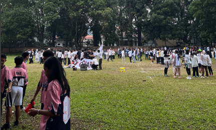

🏆🔥𝐃𝐄𝐖𝐀 𝐀𝐓𝐇𝐄𝐍𝐀 𝟐𝟎𝟐𝟔

𝐃𝐄𝐖𝐀𝐓𝐇
DEWA ATHENA bukan sekadar acara olahraga—ini adalah simbol semangat muda, perayaan kebersamaan, dan ajang paling bergengsi yang selalu ditunggu-tunggu oleh seluruh siswa SMAN 3 Bandung setiap tahunnya. Dalam momen inilah setiap kelas dan angkatan bersatu untuk menunjukkan jiwa juang, semangat kompetisi, dan rasa bangga terhadap sekolah mereka.
Kegiatan ini mempertemukan seluruh siswa kelas 10, 11, dan 12 dalam berbagai cabang olahraga yang penuh keseruan dan tantangan. Masak, badminton, mini soccer, dodge ball, hingga basket menjadi arena pembuktian keterampilan, strategi, dan kekompakan. Sorakan penonton yang memenuhi lapangan, tepuk tangan dari teman-teman, serta yel-yel khas dari setiap kelas membuat atmosfer DEWA ATHENA selalu hidup dan berapi-api. Yang membuat DEWA ATHENA semakin menarik adalah adanya pertandingan antar angkatan. Ini bukan hanya soal menang atau kalah, tapi soal gengsi dan kehormatan angkatan. Suasana menjadi semakin panas dan seru ketika perwakilan angkatan 10, 11, dan 12 bertarung habis-habisan di lapangan dengan penuh semangat. Mereka bukan hanya membawa nama kelas, tapi juga kehormatan satu angkatan. Namun, kemeriahan DEWA ATHENA tidak berhenti di lapangan pertandingan saja. Salah satu momen paling legendaris dan ditunggu adalah Fun Run sejauh 5 km mengelilingi Kota Bandung. Di momen ini, seluruh siswa dan guru berlari bersama, menyusuri jalanan kota dengan semangat yang luar biasa. Terik matahari, langkah kaki yang serempak, dan tawa lepas dari setiap peserta menciptakan pemandangan yang tak terlupakan. Fun Run ini bukan sekadar olahraga, tapi juga lambang persatuan dan semangat satu sekolah yang begitu kuat. DEWA ATHENA adalah ajang di mana setiap peluh punya makna, setiap langkah punya arti, dan setiap sorakan menggambarkan jiwa besar warga SMAN 3 Bandung. Ini bukan sekadar event tahunan—ini adalah tradisi, kebanggaan, dan warisan semangat yang selalu hidup dari generasi ke generasi. Di balik setiap pertandingan ada cerita. Di balik setiap tawa ada kenangan. Dan di balik setiap kemenangan atau kekalahan, selalu ada kebersamaan yang mengikat kuat. DEWA ATHENA bukan hanya tentang siapa yang menjadi juara, tapi tentang bagaimana satu sekolah bersatu dalam semangat yang menyala. Sumber teks diadaptasi dari: https://disdik.jabarprov.go.id.- Kembali ke Berita